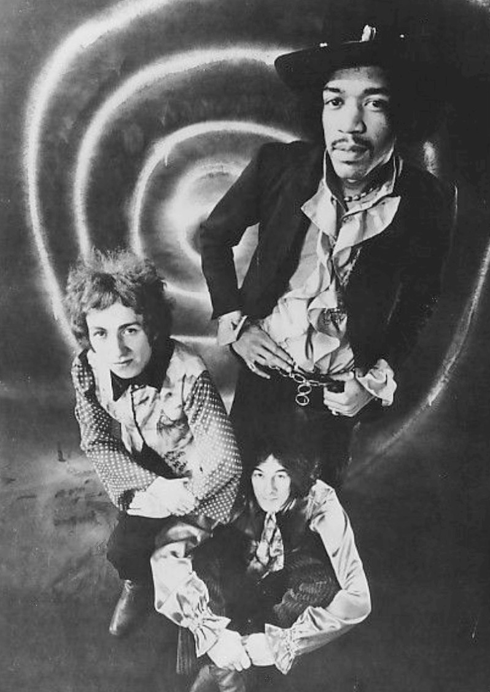

Purple Haze by The Jimi Hendrix Experience is the 1967 single that announced Jimi Hendrix to Britain.
Hendrix wrote it in December 1966, and the band cut it at De Lane Lea Studios on January 11, 1967.
It reached No. 3 in the UK and later landed on the Rock and Roll Hall of Fame's list of 500 Songs that Shaped Rock and Roll.

Table of Contents
Where the Song Came From
A Riff and a Push
Hendrix was working on the guitar part for months before he finished the lyrics.
Manager Chas Chandler, the former bassist of The Animals, heard the riff at Hendrix's flat in mid-December 1966.
Chandler told him it was the next single.
By Chandler's account, Hendrix wrote the rest in a London club dressing room on December 26, 1966.
Hendrix himself never named the date or the place.
What the Lyrics Mean
Hendrix reportedly wrote many verses, and Chandler helped trim them to single length.
In a January 28, 1967 interview, Hendrix said the song came from a dream about walking under the sea.
Later that year he described it as "a sort of daze."
Many fans read the song as an acid trip, but Hendrix and Chandler never linked it to drugs.
Recording and Release
De Lane Lea and Olympic
The band began the basic track on January 11, 1967, at De Lane Lea Studios in London.
Chandler said it took about four hours, and drummer Mitch Mitchell recalled getting it on the third take.
Chandler then took the four-track tape to Olympic Studios, where Eddie Kramer engineered the overdubs.
Chandler used headphone echo, panning, and guitar parts recorded at half speed.
Two Releases, Two Dates
Track Records released the single in the UK on March 17, 1967, with "51st Anniversary" on the B-side.
Reprise issued it in the US on June 19, 1967, backed with "The Wind Cries Mary."
That was the day after the Experience played the Monterey Pop Festival.
The song opened the US edition of Are You Experienced, released August 23, 1967.
The Sound of Purple Haze
A Tritone and a Chord
The intro sets a B-flat guitar against an E bass, a tritone once nicknamed the devil in music.
The verses rest on three chords: E7#9, G, and A.
The E7#9 is the Hendrix chord.
Hendrix fretted the G and A roots with his thumb, which left his fingers free for other voicings.
Rolling Stone described the opening as "a ferocious two-note guitar march scarred with fuzz."
New Pedals
The solo pairs a Fuzz Face distortion unit with the Octavia, built by Roger Mayer.
The Octavia doubles the frequency of the note fed into it.
This was the first recorded use of the unit, and Chandler reportedly judged it too far out for public consumption.
Chart Run and Legacy
| Chart | Result |
|---|---|
| UK Record Retailer | No. 3 (14 weeks) |
| Billboard Hot 100 | No. 65 |
| New Zealand | No. 9 |
Honors and Covers
- Rock and Roll Hall of Fame, 500 Songs that Shaped Rock and Roll, 1995
- Grammy Hall of Fame, 2000
- Rolling Stone, No. 2 on its 2003 list of 100 greatest guitar songs
- Rolling Stone, No. 17 on its 2004 list of the 500 greatest songs
Dion's acoustic version reached No. 63 on the Hot 100 in 1969.
The Cure's 1993 cover reached No. 2 on Billboard's Modern Rock Tracks chart.
Where It Fits
The record belongs to 1967, the year psychedelia took over the charts.
It also appears on our list of the best 60s songs.
Read the full Jimi Hendrix Experience biography, or explore the Psychedelic Rock hub.
FAQ
Who wrote Purple Haze?
Jimi Hendrix wrote it.
Manager Chas Chandler said Hendrix finished the lyrics in a London club dressing room on December 26, 1966.
What is Purple Haze about?
Hendrix called it "a sort of daze" and said it came from a dream of walking under the sea.
Many listeners hear a drug reference, but Hendrix and Chandler never tied the song to drugs.
When was Purple Haze released?
Track released it in the UK on March 17, 1967.
Reprise issued the US single on June 19, 1967, the day after the Experience played the Monterey Pop Festival.
How high did Purple Haze chart?
It reached No. 3 in the UK and spent 14 weeks on the chart.
In the US it peaked at No. 65 on the Billboard Hot 100.
What is the Hendrix chord?
It is an E7#9, the chord that carries the verses of Purple Haze.
Hendrix fretted the G and A bass notes with his thumb, which freed his fingers for other voicings.
A riff, a fuzz box and a four-hour session turned into the song that put Hendrix on the map.
Wikipedia's entry on the song adds more on the recording and the covers.
Press play above and hear Purple Haze by The Jimi Hendrix Experience the way Britain heard it in March 1967.